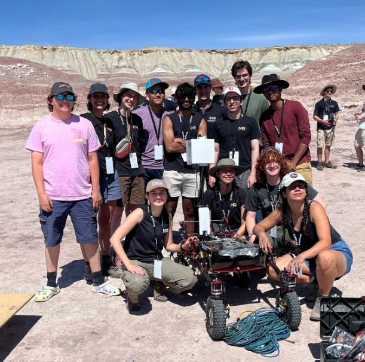

Cornell Mars Rover Project
- Led the electrical subteam to design and assemble critical PCB systems for mobility, sensing, and control.
- Delegated and mentored team members across multiple design and testing tasks.
- Collaborated with software, mechanical, and science teams to integrate subsystems for competition readiness.
- Participated in the University Rover Challenge (URC), a global collegiate robotics competition.
